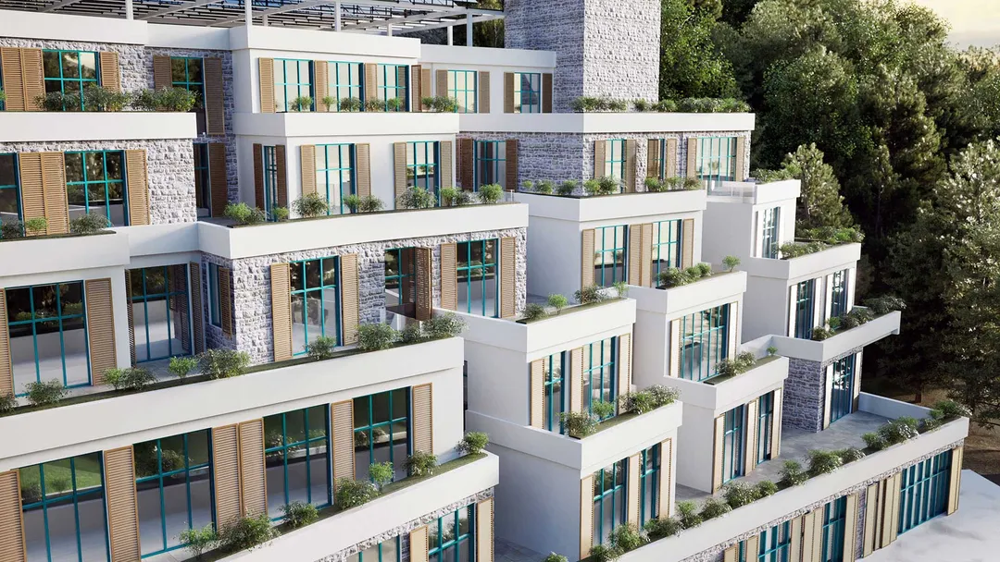

Villa Duo, Divcibare
Divčibare, Srbija, 2025
Na planinskoj parceli na Divčibarama, porodična kuća i kuća za goste nude savremeno tumačenje tradicionalnog planinskog utočišta. Sibirski ariš i antracit čelik daju objektima toplinu i oštru savremenu siluetu, i mirno ih smeštaju među okolna stabla.
Glavna kuća je organizovana oko dnevne svetlosti i otvorenog prostora: plafoni visine tri metra, dnevna zona u središtu sa kaminom i SPA i vellness zona na nižem nivou koja se otvara ka spoljnoj terasi. Kuća za goste sledi isti pristup, sa otvorenom osnovom, sopstvenom saunom i galerijom za spavanje.
Oba objekta su dobro izolovana, sa podnim grejanjem na toplotne pumpe i integrisanim sistemom pametne kuće.


Sledeći projekatLiman 2, UlcinjPogledaj projekat
